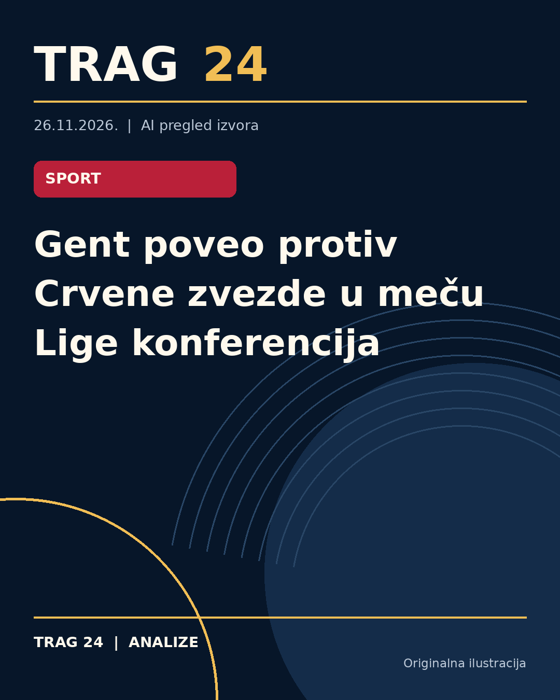

Gent poveo protiv Crvene zvezde u meču Lige konferencija

ŠTA SE DOGODILO
U okviru 4. kola UEFA Lige konferencija, fudbalski klub Gent iz Belgije poveo je protiv Crvene zvezde golom Tijaga Arauha u 26. minutu utakmice.
HRONOLOGIJA
Utakmica je ušla u 26. minut kada je Gent stigao do vođstva. De Lors je izveo korner sa leve strane, lopta je otišla do Arauha koji je sa oko 20 metara uhvatio volej i pogodio golmana crveno-belih Mateusa. Nekoliko minuta kasnije Gent je postigao još jedan gol koji je poništen zbog ofsajda. Pre same akcije domaćeg tima, u 19. minutu je prečka spasila gol Mateusa nakon opasne prilike za Gent. Do tada su crveno-beli imali početnu inicijativu u igri.
ŠTA NAVODE IZVORI
Novosti i Telegraf prenose da je gol postigao Tijago Arauho volej udarcem sa distance i prenose tok utakmice u prvim trenucima vođstva Genta, uključujući i udaljeni detalj sa poništenim golom Belgijanaca. Telegraf ističe da je Crvenu zvezdu nakon vođstva Genta očekuje težak zadatak da izjednači i eventualno preokrene rezultat, navodeći i dosadašnji učinak srpskog tima u Ligi konferencija.
ŠTA JE POTVRĐENO
Potvrđeno je da je gol za Gent postignut u 26. minutu udarcem Tijaga Arauha, da je gol domaćina poništen zbog ofsajda, kao i da je utakmica deo 4. kola UEFA Lige konferencija. Zabeleženo je da je golman Crvene zvezde bio Mateus, a da je Crvena zvezda u prethodna tri kola ostvarila pobedu, remi i poraz u ovom takmičenju.
ŠTA NIJE POTVRĐENO
Nije potvrđeno kako će se utakmica završiti niti je poznat konačan rezultat meča, kao ni detalji o daljem toku igre posle ovog segmenta. Takođe, nema potvrde o eventualnim povredama, taktičkim promenama ili izmenama tokom nastavka susreta.
ŠTA OSTАJE OTVORENO: Ostaje nepoznato kako će Crvena zvezda odgovoriti na vođstvo Genta, koji će biti završni rezultat utakmice i kakav će učinak imati ovaj duel na plasman oba tima u grupnoj fazi Lige konferencija.
Izvori
- https://www.novosti.rs/sport/fudbal/1675123/spektakularan-pogodak-gent-poveo-protiv-zvezde-video
- https://www.telegraf.rs/sport/fudbal/4440580-evo-kako-je-gent-poveo-protiv-zvezde-crveno-bele-ceka-tezak-zadatak-u-nastavku
Ova analiza je pripremljena uz pomoć veštačke inteligencije na osnovu javno dostupnih izvora. Navodi izvora nisu nužno nezavisno potvrđeni.